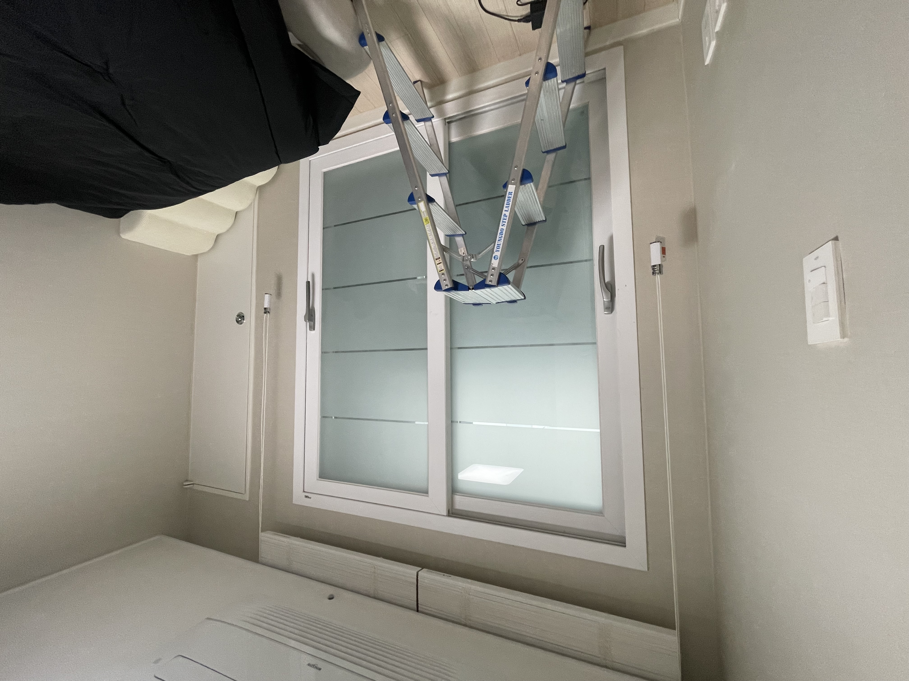
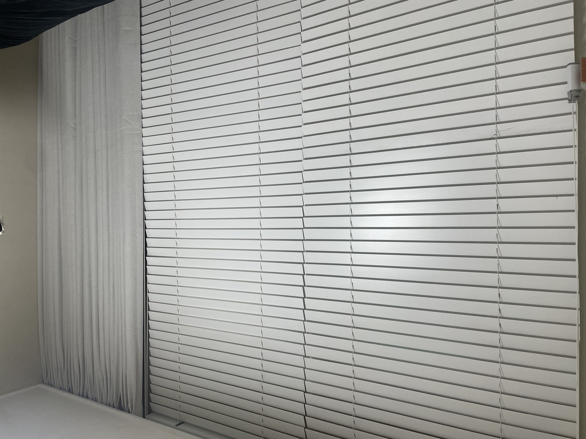
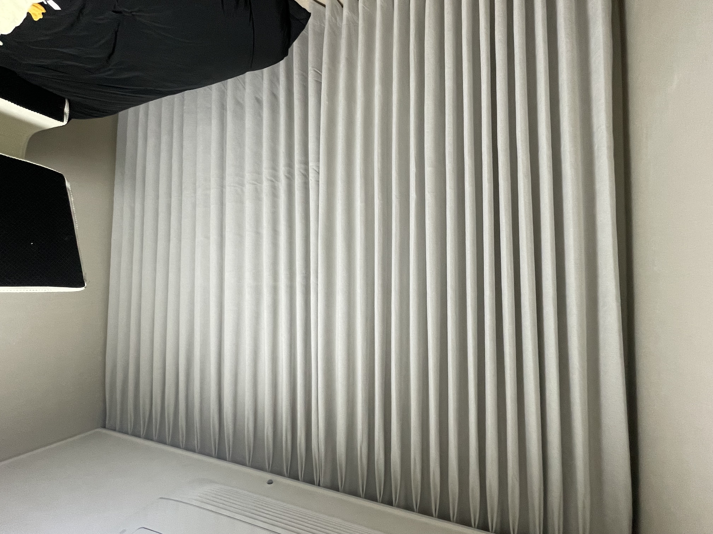

안녕하세요, 수도권 커튼·블라인드 전문 드리움 커튼&블라인드입니다. 이번 현장은 독산동 오피스텔의 거실과 안방 암막커튼 시공이었습니다. 공간별로 분위기를 다르게 잡아드렸는데요, 거실은 차분한 그레이 계열, 안방은 침대와 톤을 맞춘 베이지 계열로 통일감 있게 완성했습니다.
거실 — 그레이 암막커튼

거실은 공간이 넓고 개방감이 있어, 너무 무겁지 않으면서도 안정감을 주는 그레이 톤 암막으로 진행했습니다. 빛을 확실히 차단하면서도 실내 인테리어와 자연스럽게 어우러지는 색상이에요.
이번 시공 요약
- 위치 · 금천구 독산동 오피스텔
- 공간 · 거실 + 안방
- 제품 · 암막커튼 나비주름 (거실 그레이 / 안방 베이지)
- 포인트 · 기존 블라인드 살린 커튼 병행 시공
안방 — 베이지 암막커튼 (침대 색상과 매칭)

안방은 침대와 동일한 베이지 계열로 맞춰, 가구와 커튼이 하나의 톤으로 이어지도록 했습니다. 자기 전 완전한 어둠을 만들어주는 암막이라 숙면에도 도움이 됩니다.
시공 포인트 — 기존 화이트 블라인드를 그대로 살린 시공

이번 안방은 특별한 요청이 있었습니다. 기존에 설치돼 있던 화이트 블라인드를 그대로 두고 싶다는 고객님의 요청이었는데요. 그래서 기존 블라인드는 최대한 창문 쪽으로 바짝 붙여 정리하고, 그 앞쪽 커튼박스에 별도로 레일을 시공해 암막커튼을 달았습니다.
이렇게 하면 블라인드로 은은하게 빛을 조절하다가, 필요할 땐 암막커튼으로 완전히 차단하는 두 가지 방식을 모두 쓸 수 있습니다. 있던 걸 버리지 않고 살리면서 기능을 더한 시공이에요.
나비주름 — 딱 잡힌 주름으로 사용감까지 깔끔하게

이번 거실·안방 커튼은 모두 나비주름으로 제작했습니다. 주름이 일정하고 딱딱 각이 잡혀 있어, 열고 닫을 때 자연스럽게 접히고 펼쳐져 사용감도 훨씬 편안합니다. 커튼을 걷었을 때 부피감도 예쁘게 잡혀 공간이 한결 고급스러워 보입니다.
드리움은 금천·구로를 비롯한 서울과 광명·부천·인천 등 수도권 전 지역에서 정밀 실측부터 시공까지 직접 진행합니다. 커튼·블라인드 상담은 편하게 문의 주세요!